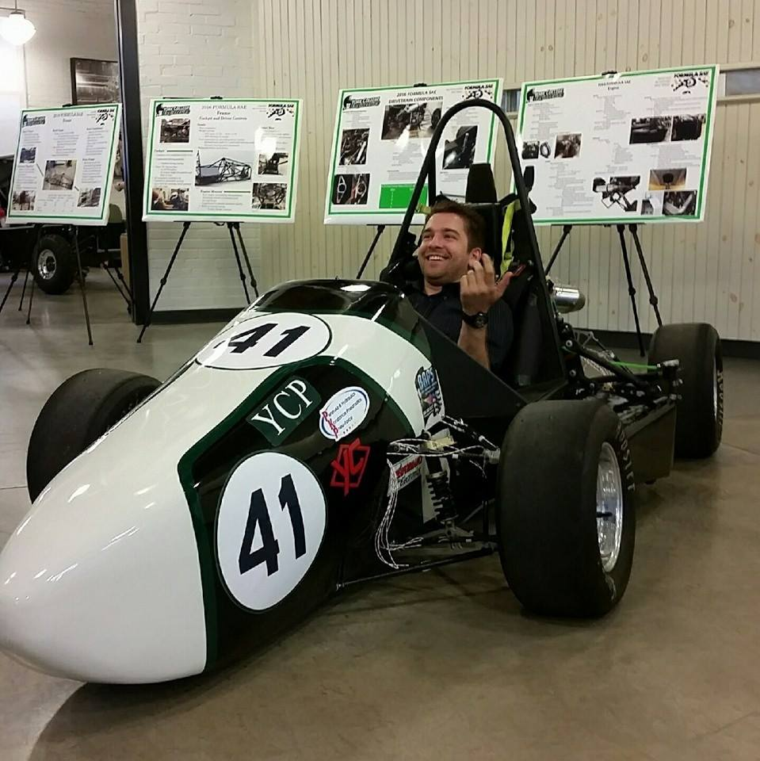

Joseph Beck: engineer, maker, entrepreneur
I love making things. Here are some of the projects I have worked on...
Formula SAE competition vehicle data acquisition system:

York College of Pennsylvania's engineering program designs and builds a formula car to send to the FSAE Michigan competition each year. The 2016 class decided to improve our suspension design
by using carbon fiber rods for the suspension members. With carbon fiber, there is a significant risk if designed improperly. The members needed to be axially loaded, if they were in
bending there is a risk of breaking. I was asked, for my capstone design project, to develop a system that would monitor each member by means of strain gauges. The system needed to monitor various sensors while the
car was in motion.
Alarm Clock pillow:
The J.D. Brown Center for entrepreneurship at York College of Pennsylvania presents a yearly elevator pitch competition. I developed a prototype of a pillow that had device for audio
streaming over bluetooth. The pillow also integrated an alarm clock. The device was small enough to barely have been felt in the pillow. Additionally, the audio from the pillow's speakers
provided a surround sound experience for the user without anyone else but the user being able to hear the sound. I won first place at the elevator pitch competition which provided me the
opportunity to go through Ben Franklin's Techcelerator program to enhance my business plan for bringing the product to market. By the end of this program I had developed a business plan
to take the alarm clock pillow to the next level. I decided I could not balance a start-up while half-way through completing my degree, and have since then not worked on the project.
Nonetheless I gained an incredible experience in learning the fundamentals of starting a business and what goes into making an incredible product.
Shuttle Tracker:
York College of Pennsylvania, like many other schools, has a shuttle system that students can take advatage of in order to get around campus. When students need to get all the way across
campus in a timely manner they often do not have time to waste waiting at the shuttle stop. This can be troubling when the current tracking system provides an inaccurate estimate of
the time of arrival for the shuttle. I heard that the school was also spending an obscene amount of money for the system which frustrated me. For one of my computer science
classes, I decided to develop a system that would incorporate a low power microcontroller, wifi module, inertial measurement unit, and GPS sensor.
The shuttles are within the campus wifi range for most of their trip around campus. The system would monitor for shuttle location and update the servers for an estimated time of arrival.
This design cost nothing in recurring costs which would save the school thousands of dollars each year.